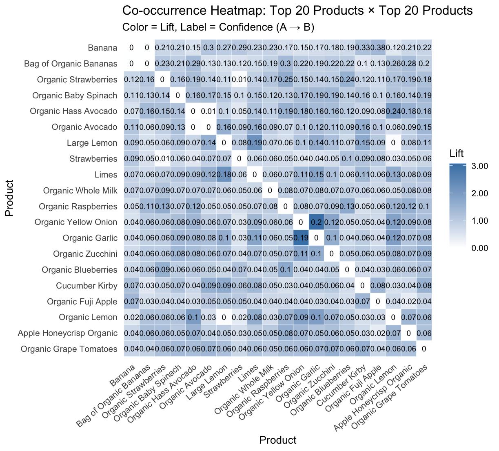
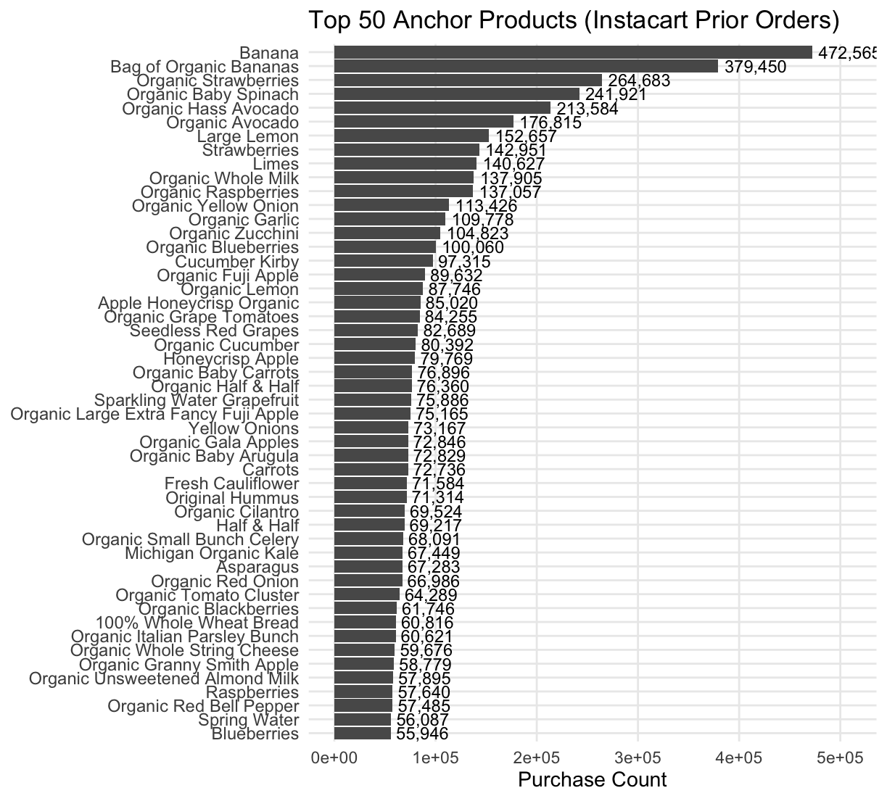

This project explores basket composition and co-occurrence patterns using the Instacart dataset. The goal is to identify which products act as anchors—items that frequently appear in orders and influence the presence of other items.
Dataset Overview
The Instacart dataset includes over 3 million grocery orders from more than 200,000 users across nearly 50,000 products.
Key Metrics
Orders
3.2M
Users
206K
Products
49.7K
Avg Basket
10.1
Visual Insights


Conclusion
A small number of high-frequency products act as anchors in customer baskets. These items drive co-occurrence patterns and can be leveraged for bundling, promotions, and recommendation systems.